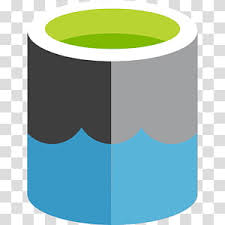

My Expertise
Skills
Technologies and tools I master
Data Processing & Analysis
Databricks
 PySpark
PySpark
 Python
Python
 SQL
SQL
 Oracle
Oracle
 Talend
Elasticsearch
Talend
Elasticsearch
PySpark
Python
SQL
Oracle
Talend
Elasticsearch
Data Engineering / Big Data
Azure Data Lake
Azure Databricks
Azure Analysis Services
 Kafka
Kafka
Kafka
BI & Visualization
 Power BI
DAX
Kibana
Power BI
DAX
Kibana
Development & CI/CD
 GitLab
GitLab
 Azure DevOps
Azure DevOps
Project Management
 Jira
Agile
Scrum
Jira
Agile
Scrum
Soft Skills
Creativity
Teamwork
Analytical Thinking
Organization
Adaptability